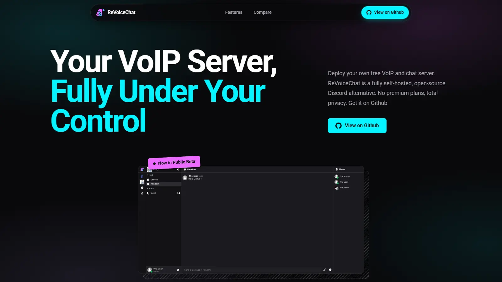

2026 · Site vitrine et CMS
Le site de présentation de ReVoiceChat, une alternative open source à Discord, produit par un CMS que j’ai développé.

ReVoiceChat est une application de chat et d’appels vocaux open source, que chacun peut héberger sur son propre serveur. J’ai conçu et développé son site de présentation : arguments clés, partage d’écran simultané, comparatif avec Discord et Slack.
Le site est généré par rl-site-builder, un CMS que j’ai créé : un backoffice React pour éditer les pages, les menus, le référencement, les médias et les couleurs, puis une compilation qui produit un site en HTML statique, mis en forme avec Tailwind CSS.
Il fallait un site dont les textes se modifient facilement et rapidement, et dont l’apparence puisse évoluer vite au besoin.
Le projet a commencé début 2026 avec un fork de ChaiBuilder, un constructeur visuel de sites open source. Sa mise en production a buté sur l’hébergeur, qui bloque certains ports entrants et sortants dont l’outil avait besoin : le site a donc été exporté en statique pour pouvoir être mis en ligne.
À l’automne 2026, j’ai décidé de refaire le projet avec un outil plus adapté à ce que je souhaitais, qui serve aussi de base à d’autres sites. rl-site-builder est né pour résoudre ce problème : il compile automatiquement le site statique, en reprenant d’abord l’apparence du site existant. Certains composants ont ensuite été améliorés graphiquement, sans bouleverser l’architecture.
Le backoffice n’est pas en ligne, ce qui évite l’exploitation de ses éventuelles failles, et le site publié est entièrement statique : il n’a besoin d’aucune base de données pour fonctionner.